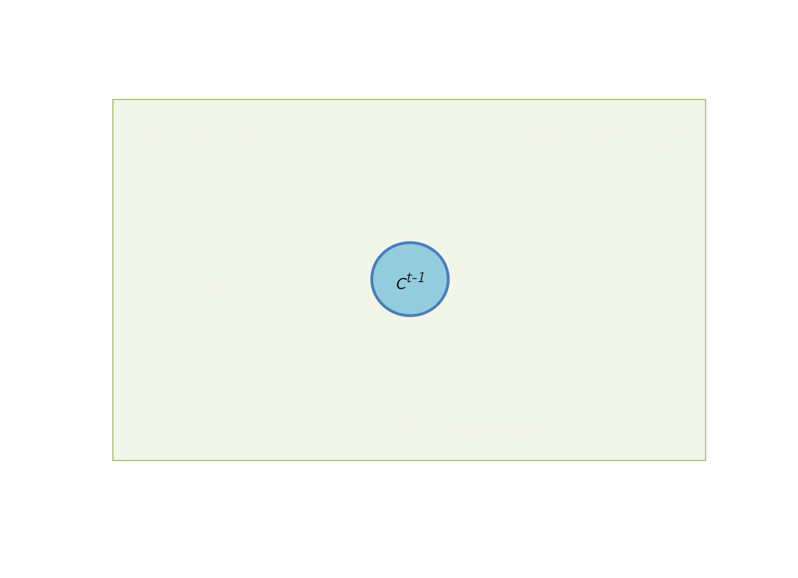
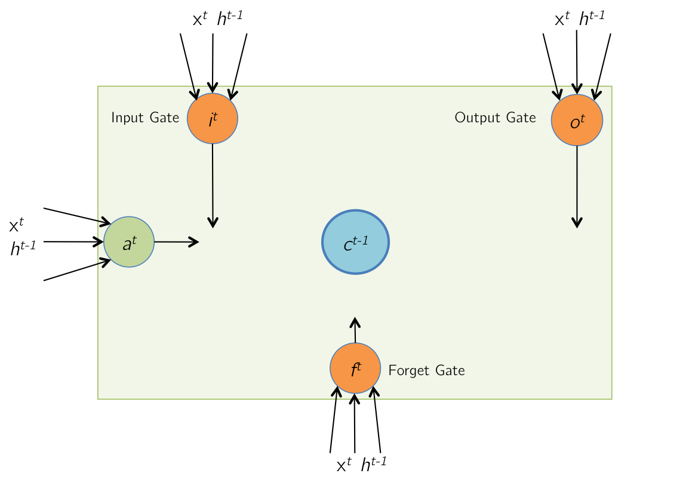
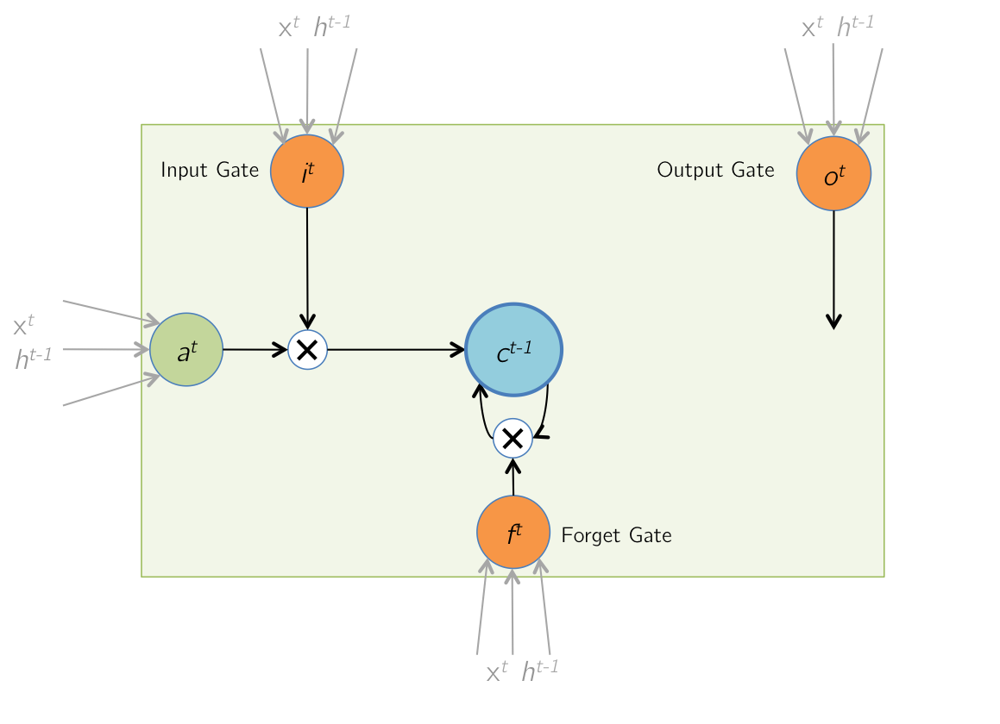
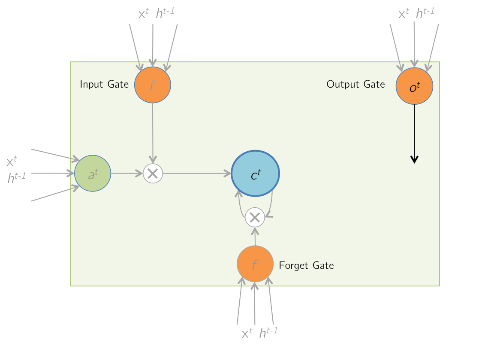
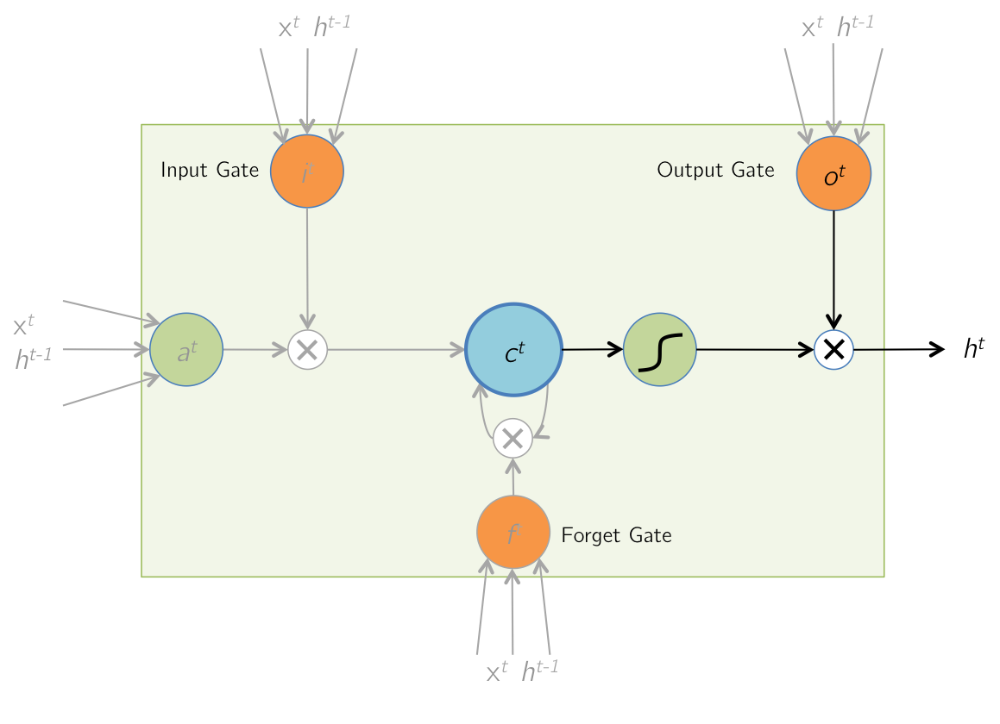

The figure below shows an LSTM unit with memory cells containing values from the previous iteration at time \( (t-1) \).
|  |
At time \( t \), The LSTM receives a new input vector \( x^t \), as well as a vector of its output at the previous timestep, \( h^{t-1} \).
|  |
\begin{align}
a^t &= \text{tanh}(W_cx^t + U_ch^{t-1}) \\
i^t &= \sigma(W_ix^t + U_ih^{t-1}) \\
f^t &= \sigma(W_fx^t + U_fh^{t-1}) \\
o^t &= \sigma(W_ox^t + U_oh^{t-1})
\end{align}
\begin{align} z^t = \begin{bmatrix} a^t \\ i^t \\ f^t \\ o^t \end{bmatrix} &= \begin{bmatrix} W^c & U^c \\ W^i & U^i \\ W^f & U^f \\ W^o & U^o \end{bmatrix} \times \begin{bmatrix} x^t \\ h^{t-1} \end{bmatrix} \\ &= W \times I^t \end{align} |
During this step, the values of the memory cells are updated with a combination of \( a^t \), and the previous cell contents \( c^{t-1} \). The combination is based on the magnitudes of the input gate \( i^t \) and the forget gate \( f^t \).
|  | $$ c^t = i^t \odot a^t + f^t \odot c^{t-1} $$ |
The contents of the memory cells are updated to the latest values.
|  | $$ c^{t-1} \rightarrow c^t $$ |
Finally, the LSTM cell computes an output value by passing the updated (and current) cell value through a non-linearity. The output gate determines how much of this computed output is actually passed out of the cell as the final output \( h^t \).
|  | $$ h^t = o^t \odot \text{tanh}(c^t) $$ |